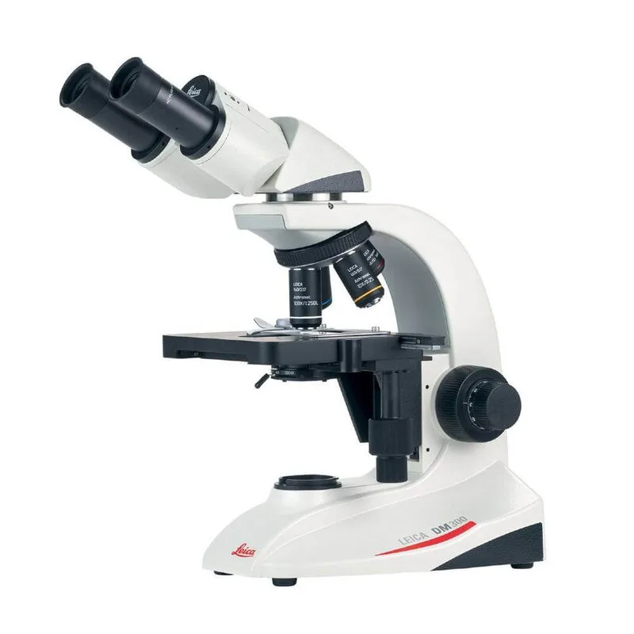

Research & Clinical Microscopes
Binocular, trinocular, and digital microscopy systems calibrated for microbiology, food quality inspection, academic labs, and pharma R&D.
Request Quote →Sourcing and supplying highly accurate scientific testing instruments alongside specialized research consumables including silicon O-rings, customized glovebox antechamber accessories, and pressure regulation units.
Filter by category or request a custom quotation for specialized technical specifications.

Binocular, trinocular, and digital microscopy systems calibrated for microbiology, food quality inspection, academic labs, and pharma R&D.
Request Quote →
Single-channel and multi-channel calibrated micropipettes and bottle-top dispensers engineered for accurate repeatable sample dosing.
Request Quote →
Benchtop and refrigerated laboratory centrifuges with digital RPM/RCF precision for analytical testing, biotech, and QC facilities.
Request Quote →Precision-molded silicon O-rings engineered for vacuum-tight seals, glovebox ports, antechambers, analytical doors, and high-temperature assemblies.
Request Sizing & Quote →Tailored antechamber doors, trays, sliding shelves, purge fittings, vacuum valves, and pass-through components for inertgas glovebox installations.
Request Custom Spec →High-purity single-stage & dual-stage pressure regulators, gauges, Ex-Lok valves, and manifold pressure stations for specialty gas delivery.
Request Quote →UV-Vis spectrophotometers, precision micro-balances, refractometers, moisture analyzers, and specialized edible/mustard oil testing instruments.
Request Quote →Certified borosilicate glassware (volumetric flasks, burettes, condensers) and analytical-grade reagents for educational, food, and QC testing.
Request Quote →Chemical-resistant island benches, wall tables, fume hoods, reagent storage cabinets, eyewash stations, and laboratory PPE kits.
Request Custom Layout →